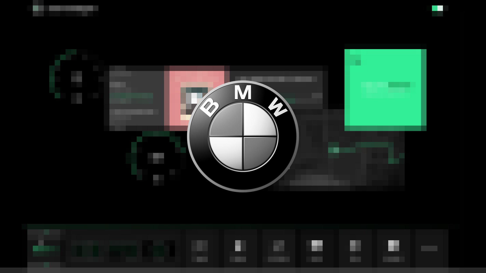

2017
BMW Advanced Design
AI-driven creative tools and future in-car experiences.

A collaboration with BMW's Design and Advanced Design teams in Germany and China (2017–2018), exploring special projects around autonomous driving interfaces and the future of in-car experience.
The work spanned two directions: future interaction models for autonomous vehicles, and the use of generative and machine learning technologies within the design process itself — asking how AI could augment automotive design thinking, not just the cars it produces.
Confidential project.